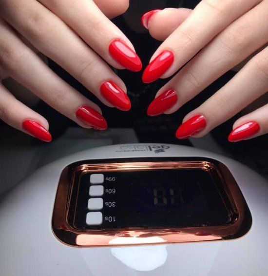

Ընտրեք ուղղությունը
Ծանոթացեք ծառայություններին և պահեք Ձեզ դուր եկած աշխատանքի օրինակը։
NAIL ART / ՍՈՎԽՈԶ, ԳՅՈՒՄՐԻ
Մատնահարդարման աշխատանքներ՝ Գյումրու Սովխոզ թաղամասում։ Հավաքեք Ձեր ոգեշնչումը և նախընտրած դիզայնը քննարկեք Ala-ի հետ։

Իրական աշխատանք՝ հրապարակային պատկերասրահից։
ՓՈՔՐԻԿ ՄԱՆՐԱՄԱՍՆԵՐ / ԱՆՀԱՏԱԿԱՆ ԸՆՏՐՈՒԹՅՈՒՆ
Հավանած աշխատանքը կարող է դառնալ զրույցի սկիզբ։ Պատմեք Ձեր նախընտրած գույնի, ձևի կամ առիթի մասին, իսկ մասնագետը կճշտի հնարավոր տարբերակները։
ԱՇԽԱՏԱՆՔՆԵՐ / ՄՈՏԻԿԻՑ
Լուսանկարները՝ բիզնեսի հրապարակային պատկերասրահից։ Դրանք աշխատանքների օրինակներ են, ոչ ընթացիկ առաջարկ կամ հասանելիության հաստատում։
ԳԱՂԱՓԱՐԻՑ՝ ԱՅՑ
Ծանոթացեք ծառայություններին և պահեք Ձեզ դուր եկած աշխատանքի օրինակը։
Նշեք ծառայությունը և ցանկալի օրը՝ ազատ ժամերը ճշտելու համար։
Վերջնական ժամը, հասցեն և արժեքը հաստատեք անմիջապես մասնագետի հետ։
Նշեք Ձեզ հարմար օրը և նախընտրած ծառայությունը։ Ազատ ժամը, արժեքն ու պայմանները ճշտեք անմիջապես մասնագետից։